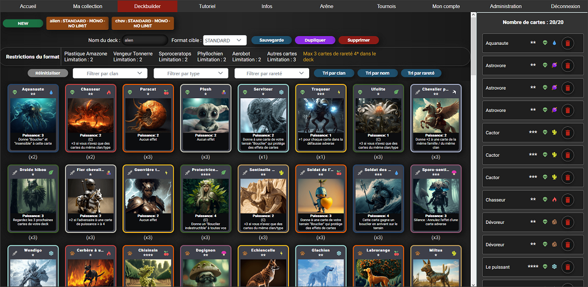
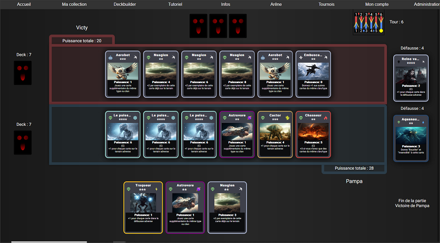

Comment jouer aux Pampa Cards ?
Les Pampa Cards sont un jeu de carte où deux adversaires s'affrontent en duel.
Avant de pouvoir jouer, vous devrez créer un deck de 20 cartes. Lors de la création d'un deck, vous devez sélectionner un format, qui correspond aux règles à respecter pour la composition de votre deck.
Le format STANDARD est le format qui a pour objectif d'équilibrer au mieux le jeu, alors que le format NO LIMIT a pour but de juste se lacher !

Le deckbuilder vous permet de créer vos decks
Le duel se joue en six tours et à la fin du sixième tour, le joueur avec le plus de puissance sur son terrain l'emporte.
Le premier joueur de la partie peut-être sélectionné aléatoirement ou décidé entre les joueurs lors de l'invitation à jouer une partie.
Une fois la partie acceptée par les deux joueurs, ils sont emmenés dans l'arène pour le combat ! C'est au premier joueur de commencer.
L’ordre des 6 tours de jeu est le suivant :
Tour 1 : Joueur 1 puis Joueur 2
Tour 2 : Joueur 2 puis Joueur 1
Tour 3 : Joueur 1 puis Joueur 2
Tour 4 : Joueur 2 puis Joueur 1
Tour 5 : Joueur 1 puis Joueur 2
Tour 6 : Joueur 2 puis Joueur 1
En partie, un schéma en haut à droite vous rappelle à tout moment où vous en êtes dans la partie et qui jouera le prochain tour.
Encadré en rouge, le schéma donnant l'ordre des tours de jeu
A chaque début de tour, le joueur commence par piocher des cartes jusqu'à avoir quatre cartes en main.
Il joue une carte et peut également se défausser d'une carte s'il le souhaite. Il n'y a pas d'ordre entre ces deux actions, un joueur peut décider de défausser une carte puis d'en jouer une autre, notamment si cela permet un combo.
Il existe deux types d'effets de cartes. Les effets instantanés s'activent au moment où vous jouez la carte et ne peuvent pas être annulés par la suite. Les effets continus sont actifs durant toute la partie mais peuvent être annulés avec un effet de Silence.
Lorsqu'il a terminé son tour, le joueur clic sur "Fin de tour" et on passe à la phase suivante.
Une fois que les deux joueurs ont terminés le sixième tour, c'est la fin de partie. Le joueur avec le score de puissance totale le plus élevé l'emporte !

L'arène à la fin de la partie